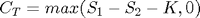
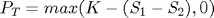
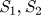
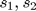
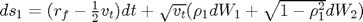
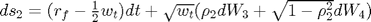
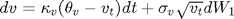
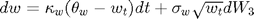
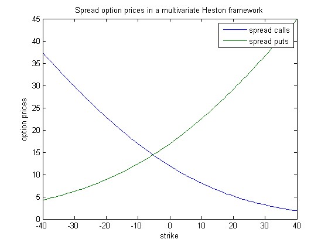

cf2spread
Compute spread option prices on the difference between to assets' price levels. Part of the CFH Toolbox.
Syntax
C = CF2SPREAD(CF,K) [C P] = CF2SPREAD(CF,K) [C P] = CF2SPREAD(CF,K,AUX)
Given a bivariate characteristic function CF of two assets' future levels, cf2spread returns C, the price of spread call options written on the difference between the future asset prices S1 and S2 with strikes in the vector K. P is the array of corresponding spread put option prices. The spread call pays , the put pays .
Input Arguments
The characteristic function CF should expect the real arguments u,v, both of dimension NxN, and return function values of the same size.
aux is a structure containing optional parameters for the Fourier transform
- aux.N number of FFT evaluation points in each dimension, default 1024
- aux.uMax upper and lower limit of integration in the image space, default 200
- aux.x1Limit log price range around the discounted forward level of S1, default 3
- aux.x2Limit log price range around the discounted forward level of S2, default 3
If aux.N exceeds the available memory, the function cf2spread throws an error and quits. For longer maturities, set aux.x1Limit and aux.x1Limit to higher values in order to sample from the whole space of future asset prices, say aux.x1Limit=3*MATURITY/N.
Contents
Example: Spread option on assets with stochastic volatility
We assume two stocks  whose log returns  follow a multivariate Heston model:




Let us assume the following parameters:
rf = 0.05; tau = 1; S1 = 100; S2 = 105; s1 = log(S1); s2 = log(S2); rho1 = 0.45; rho2 = 0.65; kV = 1.4; tV = 0.20^2; sV = 0.10; v0 = 0.22^2; kW = 0.9; tW = 0.30^2; sW = 0.07; w0 = 0.27^2;
Translate these parameters into AJD coefficients (see Theory for details):
x0 = [s1 s2 v0 w0]'; K0 = [rf ; rf ; kV*tV ; kW*tW]; K1 = [0 0 -1/2 0 ; 0 0 0 -1/2; 0 0 -kV 0 ; 0 0 0 -kW]; H0 = zeros(4); H1 = zeros(4,4,4); H1(:,:,3) = [1 0 rho1*sV 0 ; 0 0 0 0 ; rho1*sV 0 sV^2 0 ; 0 0 0 0]; H1(:,:,4) = [0 0 0 0 ; 0 1 0 rho2*sW ; 0 0 0 0 ; 0 rho2*sW 0 sW^2]; R0 = rf;
The corresponding bivariate characteristic function can be recovered via the function cfaffine and some minor tweaking. We will employ a little 'hack' in cfaffine: As we know that it cannot handle multidimensional inputs too well (vectors are a maximum), we improve its speed a bit by setting the number of time steps per maturity to a lower value than its standard value of 200. The resulting error is comparably small.
cf = @(u,v) cfaffine([1 0 0 0]'*u+[0 1 0 0]'*v,x0,tau,K0,K1,H0,H1,R0,[],[],[],[],1,15);
As we know from above, cfaffine cannot handle two-dimensional inputs too well, unfortunately. Thus, we have to invent a temporary function that evaluates the UxV array of arguments row-wise and returns an array of function evaluations of the same size:
function out = cfTemp2(cf,u,v) for k = 1:length(u); out(k,:) = cf(u(k,:),v(k,:)); end
We will employ cf2spread with a slightly reduced number of evaluation points in order to cope with the fact that cfTemp2 is rather slow.
K = [-40:1:40]'; [C P ] = cf2spread(@(u,v) cfTemp2(cf,u,v),K,struct('N',2^9)); plot(K,[C P]); legend('spread calls','spread puts'); xlabel('strike'); ylabel('option prices'); title('Spread option prices in a multivariate Heston framework');
Note that we could easily accomodate for additional factors, stochastic interest rates, etc. in this framework.